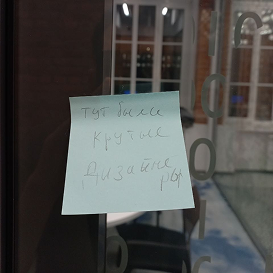

, четверо людей
Алан придумал вести журнал, но не придумал чего в него писать. Поэтому это такой тестовый драфт, надеюсь, исторический.
Мы вкусно поели в столовой, а вечером поиграли в настолку. Обсуждали, есть ли стратегия в нардах и откуда берутся фамилии (ещё много чего обсуждали, но Алан всё забыл).
Денис делал ролик, Даша ругалась на нейросети и светотень, Алан показывал портфолио, а Лёша сдался, и решил поиграть с нами в настолку (и признался, что работает 3 часа в день).
